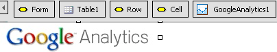
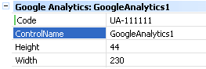

The control gives you an easy way to integrate all the features provided by Google Analytics in your web sites.
In order to use this control you just need to drag and drop the control from the Toolbox to your web form (usually the master page of your application).

Then, just set the code you received from Google Analytics in the property named Code.

To get the Google Analytics Code, follow these steps and fill the Code property, you are done.
(1) - Available since GeneXus 17 upgrade 5
| Backlinks | ||
| Analytics external object | Dimensions property in the Google Analytics Control | GXGoogle Visualization Library |
| Web Panel form |